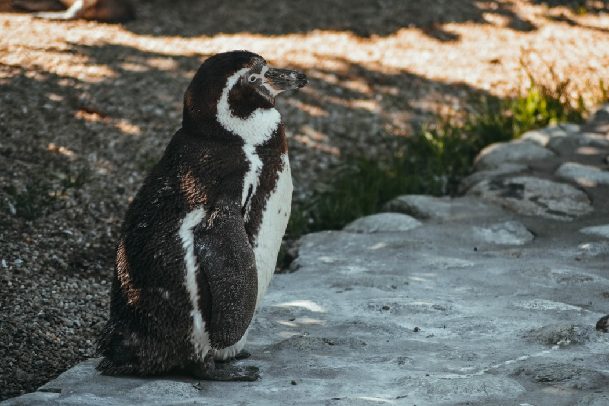

Oh look, it's penguins!
Waddle you waiting for? Get to know the guys!
General Information
The penguin, or Spheniscidae for its latin equivalent, is an aquatic bird thats cannot fly but is an expert swimmer and diver.
Appearance
Their plumage is black and white, whilst some penguins can have streaks of orange or yellow on their faces, beaks or feet. There are various appearances penguins can take up. Emperer penguins have big white stomachs, black tails, wings and head and a yellow marking on the neck and head's sides. Other penguins like the little penguin have a black or dark navy coat and white stomachs.
Diet
Penguins are carnivores that enjoy eating squids, fishes and krill which are shrimp-like crustaceans.
Distribution
A lot of penguins are found in the Southern Hemisphere and not just cold climates like Antarctica. There is even one species that lives near the equator!
Species
There are 17 penguin species, some of which include; the Emperer penguin, Macaroni penguin, Gentoo penguin, King penguin, Little penguin and Southern rock-hopper penguin.
Penguin Fun Facts
Penguins huddle together for warmth or to protect themselves from predators.
Penguins adapted to fly underwater - unlike other birds, their bones are dense to avoid floating!
Penguins have a waterproof oil in their glands and spend their days covering themselves with it for added warmth.
Female penguins are wooed by rocks their male counterparts gift to them!
Penguins can drink sea water and Emperer penguins can hold their breath for 20 minutes underwater!
Here's a few more penguin facts!
Penguins swallow stones and pebble as they may help grind up food in their stomachs or make them heavier when they're in water!
Back in 2012, scientists discovered why penguins are so fast when they swim and this is due to their tails creating bubbles behind them and this reduces the water's density around them.
Images
Penguins' eyes work well underwater but are short-sighted on land.
A penguin's body temperature is generally around 38 degrees Celsius.
Pollution is a huge factor in the cause of penguin population decline.
Penguins cheat on their partners and mothers kidnap each other's chicks.